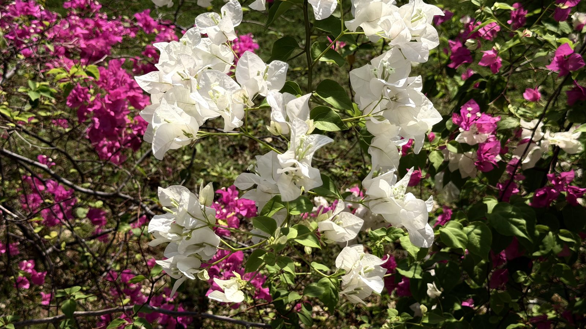
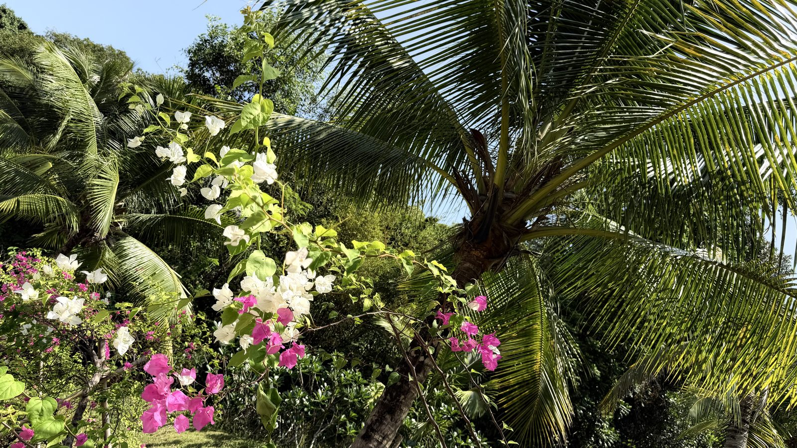
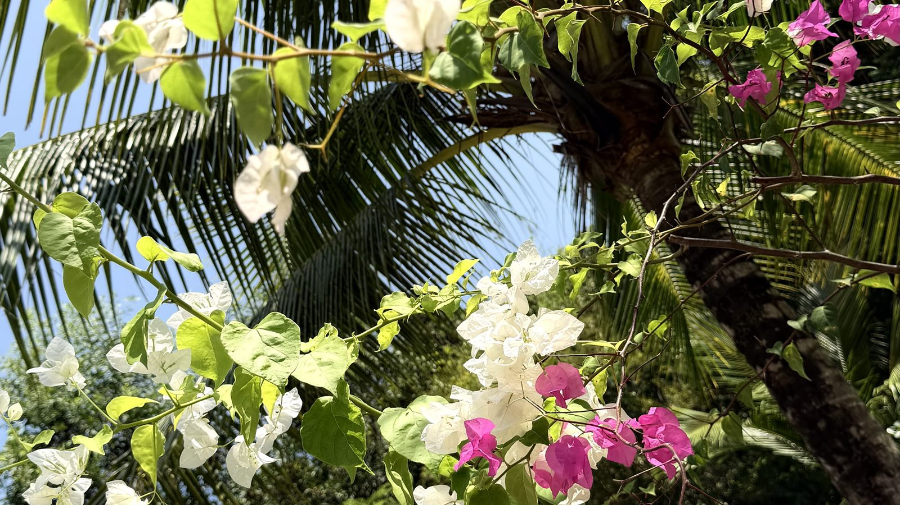
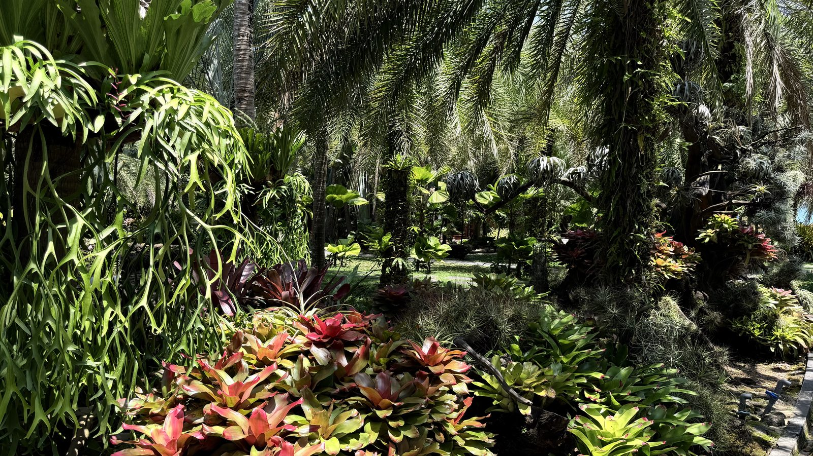
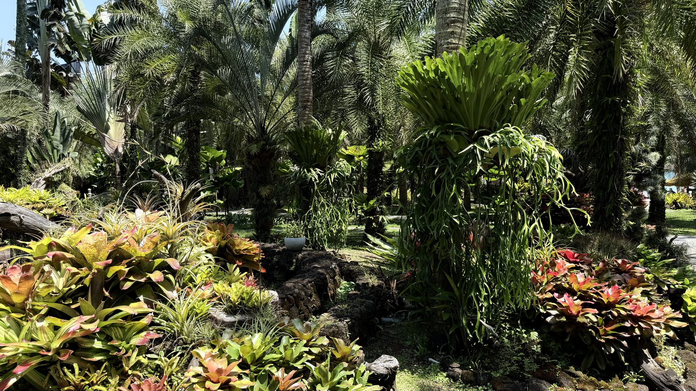
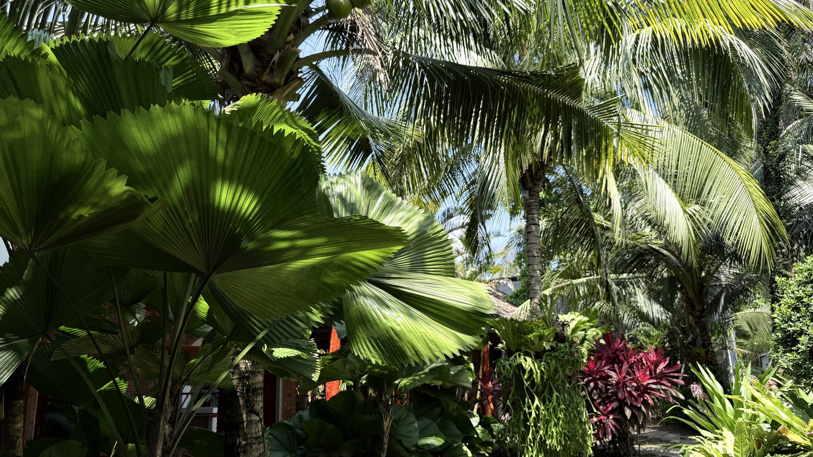
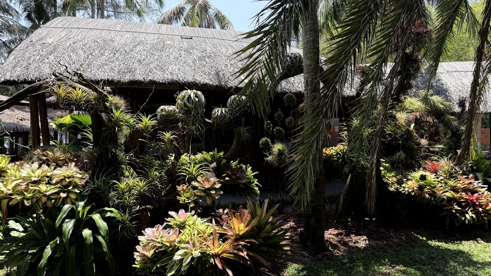
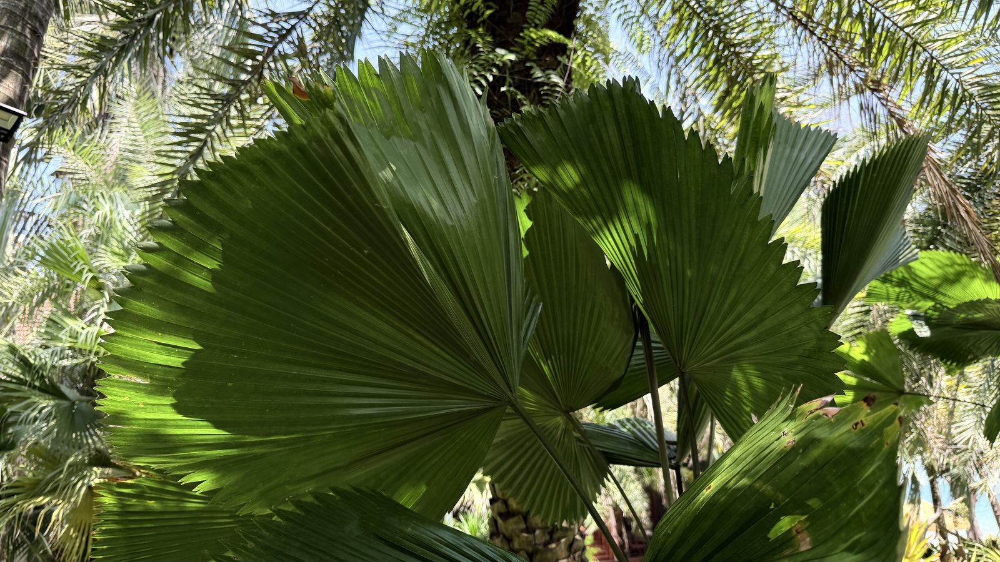
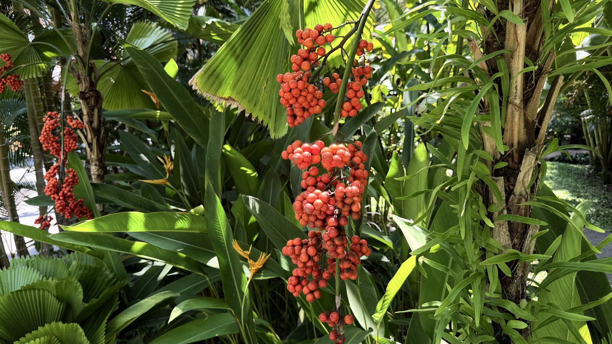

The weight she finally put down
There is a kind of relief that does not arrive as joy. It arrives as silence. As the moment when the body finally stops bracing for the next thing — and simply stands where it is.
Moments lived before they were shared. That is the only rule of this journal.

There is a kind of relief that does not arrive as joy. It arrives as silence. As the moment when the body finally stops bracing for the next thing — and simply stands where it is.

She did not know where the road went. That was the point. For the first time in years, not knowing felt like the most honest direction she could take.

Nobody gave the flower permission. Nobody scheduled its opening. It simply arrived — fully itself, unapologetically vivid — as if beauty were never meant to wait for approval.

Warmth rising from the bowl. Colour arriving without effort. No phone beside the plate. Just attention — the kind that turns eating into something close to ceremony.

There is a window of time — early, before anyone needs you — when the air is different. Softer. As if the world itself is still deciding what kind of day to become.

There are heights that make you feel small. And then there are heights that make you feel exactly the right size — standing between vastness above and noise below, wearing nothing but light.

Red does not hesitate. Red does not ask if it is too much. It simply arrives — unapologetic, alive, burning in the afternoon light. There is a woman inside every flower that blooms like this.

A poached egg on greens. Bread still warm. No rush. No performance. Just a bowl, a moment, and the kind of attention that turns eating into something sacred.

When the dress matches the world behind you, it is not a coincidence. It is a conversation — between who you are and where you stand, between the garden within and the garden around.
Each moment here was lived before it was shared. If something in these pages felt familiar, the letters go deeper.
Enter Khora